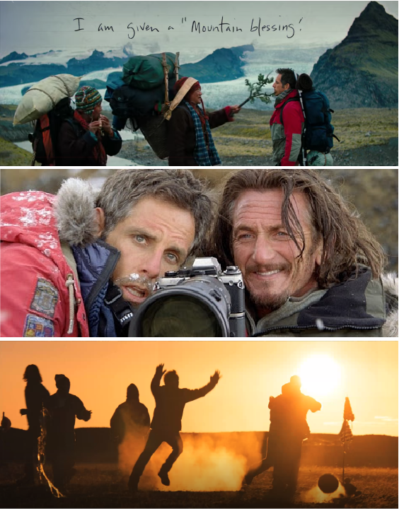

5/16
눈 앞에서 숀을 놓쳐버린 미티는 다시 집으로 돌아오지만 포기하지 않고 마지막 촬영지인 히말라야로 향한다.
히말라야 등산에 가이드 도움을 받다 중턱부터 홀로 산을 오르기 시작한다. 그러던 중 숀을 우연히 만난다. 숀은 산 속의 유령이란 별명을 가질 정도로 포착하기 어려운 눈표범을 기다리고 있던 중이다. 기다리던 끝에 눈표범을 발견하지만 숀은 사진을 찍지 않는다. 미티가 왜 사진을 찍지 않냐고 묻자 숀은 이렇게 답한다.
“아름다운 것을 보면 그저 그 순간 속에 머물고 싶다 지금 이 순간”